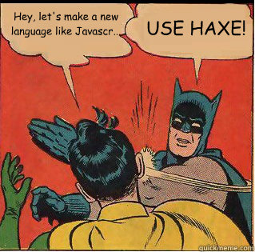

Unity3D on steroids
Adding Unity to your supersonic Haxe toolbox
Created by Cauê Waneck / @cwaneck
Why Unity3D?
- Most popular tool for 3D games
- Multiple targets: web-based using a plugin
- Flash "refugees"
- Asset store
- Because
WE CAN
Why Haxe?
- Very little change in workflow
- Unity as a target: Natively target even more platforms
- Awesome open-source community
- Future-proof code base
- Documentation?
- Don't fight, assimilate
- Elegant and feature-rich language
- Functional and imperative programming
- Pattern matching, array comprehensions, ADTs and so much more
- Did I mention... macros ?
Why Haxe? (tl;dr)
Getting started with Unity/Haxe
How it was

Now
net-lib
- Haxe/C#'s counterpart of -java-lib and -swf-lib
- No need to create externs
- Do pratically anything you can do with pure C# code
- Properties, events, delegates, ...
Generated code
import cs.NativeArray;
import unityengine.*;
@:nativeGen class ExampleScript extends unityengine.MonoBehaviour
{
public var stringProp:String;
public var arrayProp:NativeArray<Int>;
public var vectorProp:Vector3;
function Update()
{
Debug.Log("I'm working!");
}
}
Generated code
#pragma warning disable 109, 114, 219, 429, 168, 162
public class ExampleScript : global::UnityEngine.MonoBehaviour {
public ExampleScript() : base() {
}
public string stringProp;
public int[] arrayProp;
public global::UnityEngine.Vector3 vectorProp;
public virtual void Update() {
global::UnityEngine.Debug.Log(((object) ("I\'m working!") ));
}
}
Error positions
Error positions
Equivalence
Code
//C#
EditorApplication.update += delegate() { Debug.Log("update"); };
void Update() {}
SomeComponent comp = GetComponent<SomeComponent>();
[UnityEngine.InitializeOnLoad] public class Something ...
//Haxe
EditorApplication.update += function() Debug.Log('update');
function Update() {}
var comp:SomeComponent = GetComponent(); //or var comp = (GetComponent() : SomeComponent)
@:meta(UnityEngine.InitializeOnLoad) class Something ...
Steroids

WIP: unihx
$ haxelib run unihx init path/to/dir
unihx features
- Automatic recompilation (using compilation server)
- Generate files in the folder relative to where they are
- Drag & Drop support for Haxe classes
- Avoid the generated C# code warnings
- Mix pure C# code with Haxe and cross-reference between them
- Add Vector / Quaternion operator overloading
unihx features
Haxe API overrides
- trace() -> Debug.Log
- haxe.Timer
- haxe.Http -> UnityEngine.WWW (planned)
Slides
Not a coder? No problem. There's a fully-featured visual editor for authoring these, try it out at http://slid.es.
Point of View
Press ESC to enter the slide overview.
Hold down alt and click on any element to zoom in on it using zoom.js. Alt + click anywhere to zoom back out.
Works in Mobile Safari
Try it out! You can swipe through the slides and pinch your way to the overview.
Marvelous Unordered List
- No order here
- Or here
- Or here
- Or here
Fantastic Ordered List
- One is smaller than...
- Two is smaller than...
- Three!
Transition Styles
You can select from different transitions, like:
Cube -
Page -
Concave -
Zoom -
Linear -
Fade -
None -
Default
Themes
Reveal.js comes with a few themes built in:
Default -
Sky -
Beige -
Simple -
Serif -
Night
Moon -
Solarized
* Theme demos are loaded after the presentation which leads to flicker. In production you should load your theme in the <head> using a <link>.
Global State
Set data-state="something" on a slide and "something"
will be added as a class to the document element when the slide is open. This lets you
apply broader style changes, like switching the background.
Custom Events
Additionally custom events can be triggered on a per slide basis by binding to the data-state name.
Reveal.addEventListener( 'customevent', function() {
console.log( '"customevent" has fired' );
} );
Slide Backgrounds
Set data-background="#007777" on a slide to change the full page background to the given color. All CSS color formats are supported.
Image Backgrounds
<section data-background="image.png">Repeated Image Backgrounds
<section data-background="image.png" data-background-repeat="repeat" data-background-size="100px">Background Transitions
Pass reveal.js the backgroundTransition: 'slide' config argument to make backgrounds slide rather than fade.
Background Transition Override
You can override background transitions per slide by using data-background-transition="slide".
Clever Quotes
These guys come in two forms, inline:
“The nice thing about standards is that there are so many to choose from”
and block:
“For years there has been a theory that millions of monkeys typing at random on millions of typewriters would reproduce the entire works of Shakespeare. The Internet has proven this theory to be untrue.”
Pretty Code
function linkify( selector ) {
if( supports3DTransforms ) {
var nodes = document.querySelectorAll( selector );
for( var i = 0, len = nodes.length; i < len; i++ ) {
var node = nodes[i];
if( !node.className ) {
node.className += ' roll';
}
}
}
}
Courtesy of highlight.js.
Intergalactic Interconnections
You can link between slides internally, like this.
Fragmented Views
Hit the next arrow...
... to step through ...
any type- of view
- fragments
Fragment Styles
There's a few styles of fragments, like:
grow
shrink
roll-in
fade-out
highlight-red
highlight-green
highlight-blue
current-visible
highlight-current-blue
Export to PDF
Presentations can be exported to PDF, below is an example that's been uploaded to SlideShare.
Take a Moment
Press b or period on your keyboard to enter the 'paused' mode. This mode is helpful when you want to take distracting slides off the screen during a presentation.